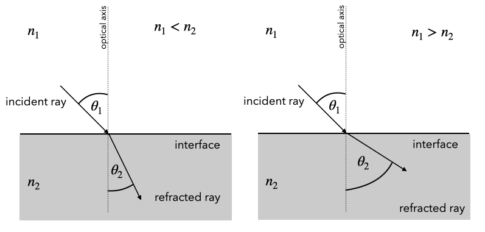
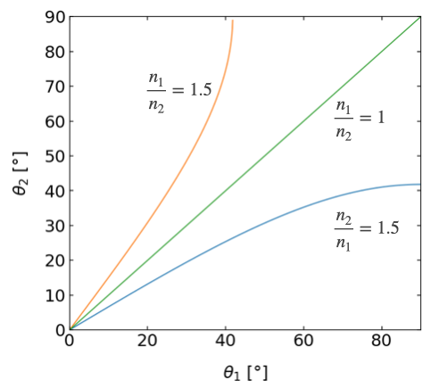
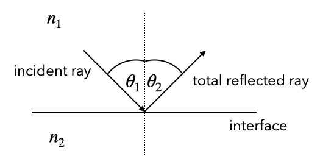
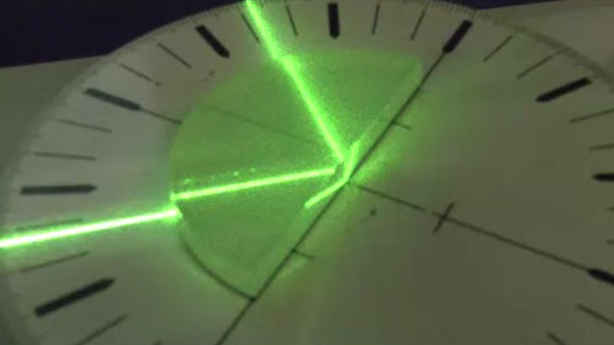
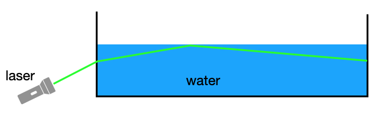
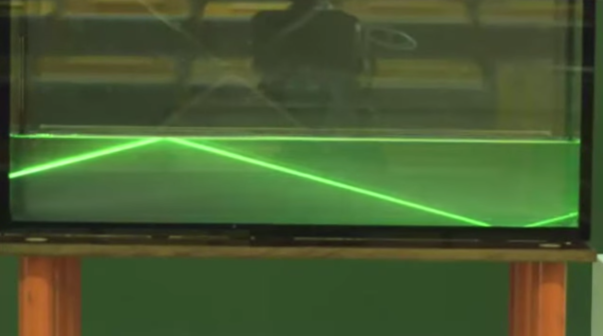
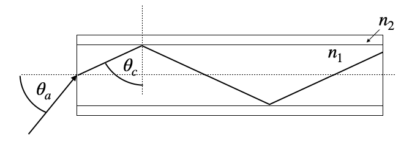
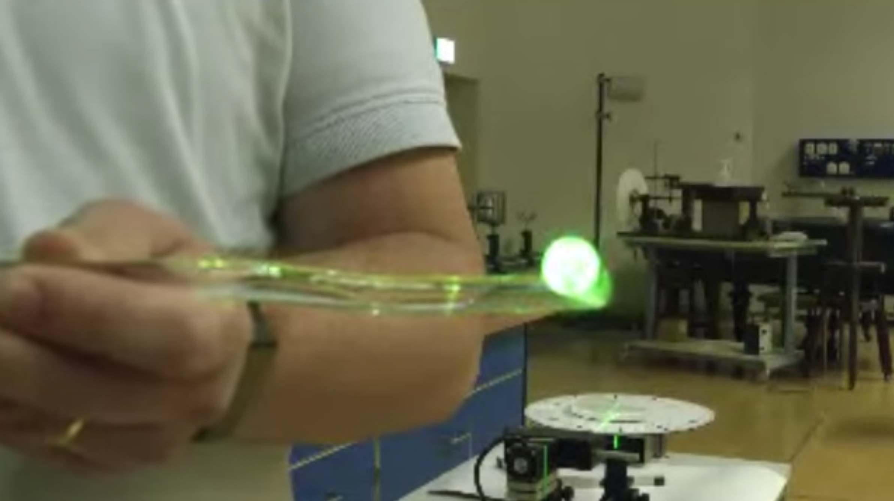

This page was generated from `/home/lectures/exp3/source/notebooks/L1/Refraction.ipynb`_.

Refraction¶
The law of refraction is the second important law of geometrical optics. It connects the refractive index \(n_1\) at the incident side and the angle of incidence \(\theta_1\) to the refractive index \(n_2\) and the angle of refraction \(\theta_2\) on the transmission side. It will later turn out, that both laws, the law of reflection and the law of refraction actually correspond to a conservation of momentum.
Refractive Index¶
The refractive index \(n\) is a material constant representing the factor by which the speed of light is slowed down in the medium. As the maximum speed is the speed of light in vacuum, the refractive index is typically a number \(n \ge 1\). Yet, it will turn out later, that the refractive index can be smaller than 1 or even negative. This, however, requires first to understand the origin of the refractive index.
Snells Law¶
 |
|---|
Fig.: Snell’s law. |

Law of Reflection (Snells Law)
The law of refraction (Snell’s law) is given for the above sketch by
\begin{equation} n_1 \sin(\theta_1)=n_2 \sin(\theta_2) \end{equation}
In the previous section in refraction we have derived the law of reflection from Fermat’s principle. Try yourself to obtain Snell’s law with the help of Fermat’s principle. Check out the Refraction Explorer Snippet if you want to play around with Snells law. You may tray there even negative refraction.
According to Snell’s law, there is a general behavior of the corresponding angles, which you might want to remember (see also Fig. above). Consider the following cases:
\(n_1<n_2\): - refraction is towards the optical axis - \(\theta_2<\theta_1\)
\(n_2<n_1\): - refraction is away from the optical axis - \(\theta_1<\theta_2\)
The plot below shows this result in three plots with varying incident angle and two different refractive index combinations (glass/air, ait/glass).
 |
|---|
Fig.: Snells law for different combinations of refractive indices. |
Total Internal Reflection¶
The above diagram reveals a special case occurring when \(n_1>n_2\). Under these condition, one may change the incident angle \(\theta_1\) such that the outgoing angle becomes \(\theta_2=\frac{\pi}{2}\). For any incident angle \(\theta_1\) larger than this critical angle, the is no refracted ray anymore, but just a reflected ray. This is despite the fact that the material with \(n_2\) is completely transparent. This phenomenon is called total internal reflection and it has several important applications.
Let’s first formalize this. Using the Snell’s law. For \(\theta_2=\frac{\pi}{2}\) we obtain
for the critical angle \(\theta_c\). As the \(\sin^{-1}()\) requires an argument \(\le1\), this works only if we have \(n_2 < n_1\)
  |
|---|
Fig.: Total internal reflection |
Total Internal Reflection
Total internal reflection occurs when light is passing from higher refractive index to lower refractive index materials for incidence angle larger than a critical angle
\begin{equation} \theta_c=\sin^{-1}\left (\frac{n_2}{n_1}\right ) \end{equation}
We can demonstrate total internal reflection very easily with a water basin, for example, where we couple in light from a laser from the side.
  |
|---|
Fig.: Total internal reflection at a water/air interface. |
But you could try that yourself also in the bath tub diving below the water surface.
Optical Fiber Total internal reflection is very important for guiding light in telecommunications, for example. There, glass wires with a diameter from a few to several 100 µm are used to transport light. The glass wire with a central core of refractive index \(n_1\) is surrounded by a cladding layer of slightly lower refractive index \(n_2\). Light is then coupled into the fiber from one side. To obtain total internal reflection in this setting, the incident rays have to hit the front of the fiber at a maximum angle \(\theta_{a}\)
  |
|---|
Fig.: Total internal reflection in an optical fiber and a glass rod. |
The angle \(\theta_{a}\) can be easily calculated from Snells law. To characterize this opening angle one typically defines a new quantity called numerical aperature \(NA\), which is the sine of the opening angle \(\theta_a\)
\begin{equation} NA=\sin(\theta_a)=\sqrt{n_1^2-n_2^{2}} \end{equation}
Using typical values of the refractive indices \(n_1=1.475\) and \(n_2=1.46\) one obtains a numerical apeture of \(NA\approx 0.2\).